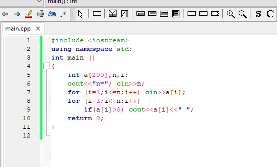
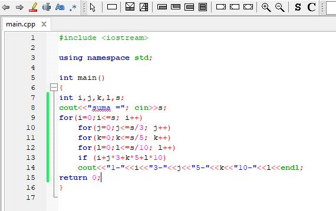
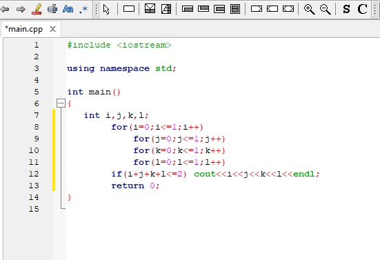

Problema 1. De creat un program care va crea o submulțime astfel încât suma elementelor să fie maximă.
Problema 2. De creat un program care va reprezenta variantele posibile a unei sume, folosind monede de 1,3,5,10.
Problema 3. De creat un program care va tipări secvențele pe 4 biți ce nu conțin mai mult de 2 unități.
